Ticket Customization
From here, you can customize the tickets.
-
Click on +Add, this displays Priority Type page.
-
Enter Add New Priority and click on Save button.

Priority Type
From here you can add, edit or delete the priority types. These priorities are displayed in the new request panel from where the requester can select the priorities for their ticket.
To create priority type, follow the below steps:
Delete: Click the delete icon, this displays a dialog box. Click Yes button.
Edit: You can edit the Edit Request Type. Click the edit icon, this displays Edit Request Type. Update the Edit Request Type and click on Submit button.
-
Click on +Add, this displays Add Request Type page.

-
Enter Add Request Type and click on Submit button.
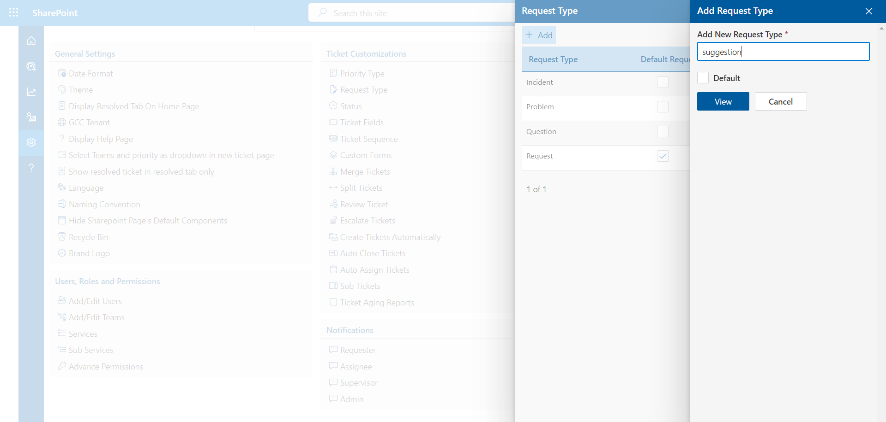
Request Type
Admin can add request types from settings such request type will display in new ticket panel.
To create request type, follow the below steps:
Delete: Click the delete icon, this displays a dialog box. Click Yes button.
Edit: You can edit Edit Request Type. Click the edit icon, this displays Edit Request Type. Update the Edit Request Type and click on Submit button.
-
Click on +Add, this displays Add Status page.
-
Enter Status Title and click on Submit button.
Status
From here admin could add, edit, or delete the status. All these status are displayed on the home page of the requester and they would be able to check the status for their ticket.
To create status, follow the below steps:
Delete: Click the delete icon, this displays a dialog box. Click Yes button.
Edit: You can edit Edit Status. Click the edit icon, this displays Edit Status. Update the Edit Status Title and click on Submit button.
Ticket Field
The new Ticket panel (ticket form) can be controlled from here.
To order the fields click on Toggle. To hide the fields, disable the toggles and to show the fields, enable the toggles and click on Submit button to save changes.
Ticket field settings reflect in ticket form only for the user role person.
Ticket Sequence
Ticket Name and Ticket Prefix could be added.
If ticket name is SR and ticket prefix is 1, the ticket ID would be SR#100XXXX.
Note: You may also use teams code as ticket’s suffix, you need to enable the toggle switch form custom settings.
Custom Forms
Custom Forms could be added.
On the ticket customization settings panel, click the Configure button.
When a panel with custom forms opens, click on the Add button in the panel.
Fill out the required data and choose the checkbox to include the field in the form to build a custom form. Click the Save button now.
Note: To make field mandatory, please check the check box & selected field will be denoted by asterisk for your reference.
Delete: Click on the delete icon to delete a field.
Add: Drag the fields to add in the ticket form.
The form will be added to the panel after saving, where you may edit or delete it.
Click on the gear icon to Configure Custom Form.
Select the check box Make this Form as Default Form to make the form as a default form. A pop up will appear , click on the OK button.
The custom form will be displayed on the New Ticket panel.
Click on the requester configure button from the Notifications.
Now click on the edit icon from the Requester panel.
From the edit email body panel you could the custom templates from the Custom Template dropdown.

-
Go to home page and click the Ticket ID to open the comment page.
-
On the comment page, click the Merge button, which displays a pop-up.

-
Click the Yes button, which displays merge to pop-up.

-
Enter the Ticket ID to merge into.
-
Click the Merge button.
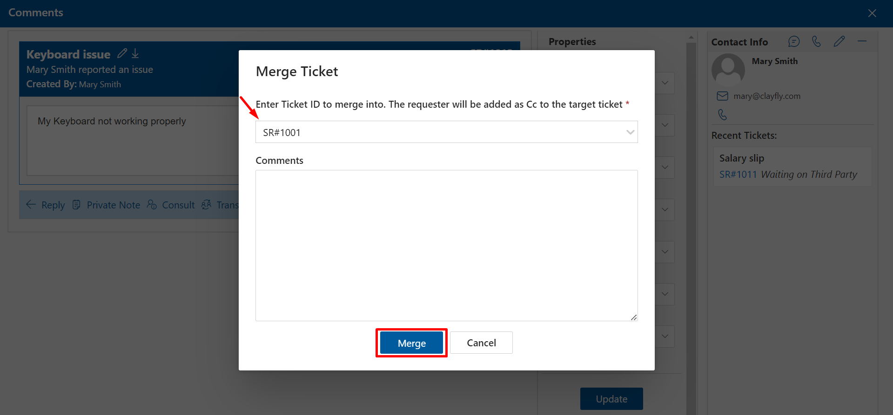
Merge Tickets
Once the admin enables the merge ticket option from the settings, it displays on the ticket comment page, where the admin or ticket assignee could merge the ticket with another ticket using the ticket ID.
Once the tickets are merge (other tickets), the old ticket ID’s would get closed and a new ticket ID would be generated, followed by a notification for ticket merge is sent to ticket requester.
To merge the tickets, follow the steps:
-
Go to home page and click the Ticket ID to open the comment page.
-
On the comment page, click the Split button, which displays a pop-up.

-
Click the Yes button, which displays Ticket Split to pop-up.
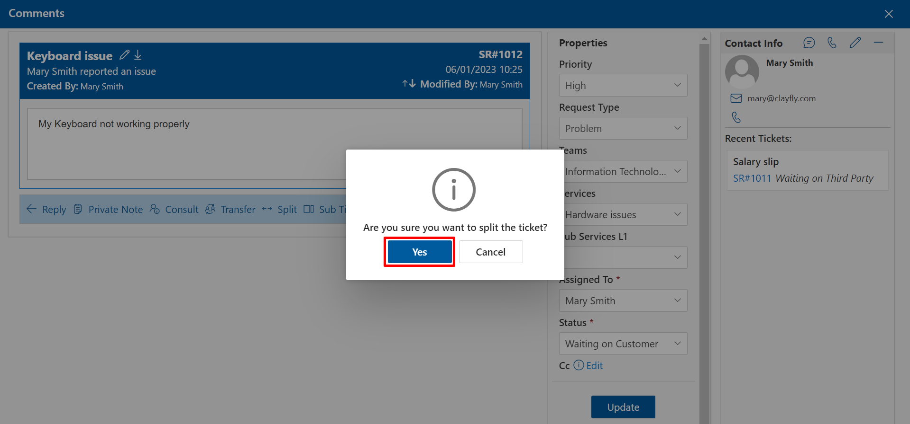 -
Enter New Ticket Title and comments, select Teams and Services to merge into.
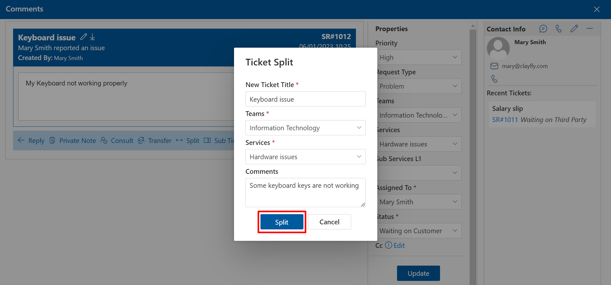 -
Click the Split button.
Split Tickets
Admin can enable the toggle switch for split tickets.
To split the ticket, follow the steps:
-
Go to home page and click the Ticket ID to open the comment page.
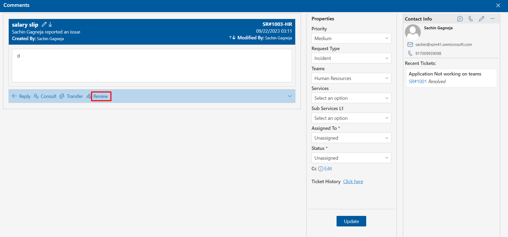 -
On comment page, click the Review button, this displays comment box to write the comments.
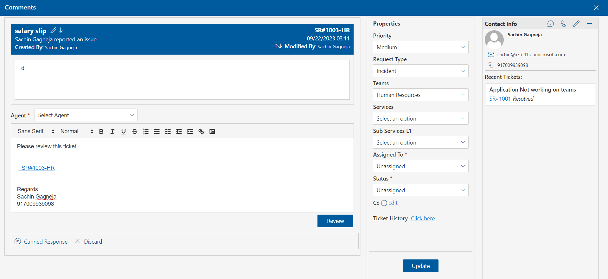 -
Select Teams Members with whom you want to share the review.
-
Click the Review button.
Review Tickets
Admin can enable the toggle switch for review ticket.
To review the tickets, follow the steps:
Enable ticket closed justification
The 'Enable ticket closed justification' setting allows users to require justification when closing a ticket. This can be toggled on or off as needed for additional accountability in ticket management.

If you enable Enable ticket closed justification you will need to provide a justification every time you close a ticket.
And if the user has enabled the 'Enable ticket closed justification' setting, then the second option, 'Make Ticket Closure Justification Mandatory,' will be shown. In this case, the user will not be able to close the ticket without providing justification—it will be mandatory.
-
Go to home page and click the Ticket ID to open the comment page.
-
On comment page, click the Escalate button, this displays comment box to write the comments.

-
Select Escalation Teams and Escalation Teams Members.
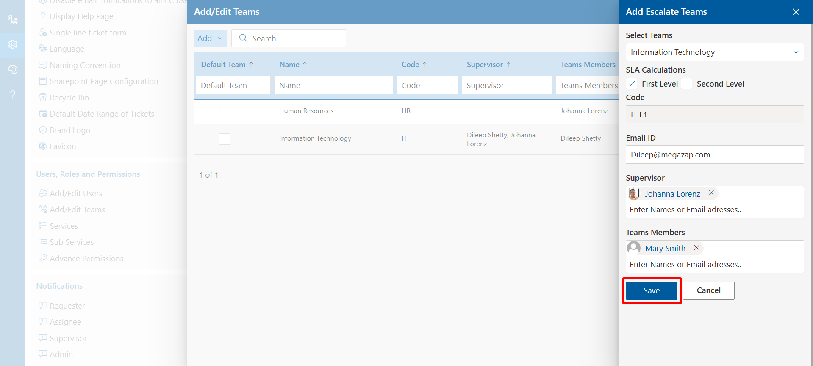 -
Click the Escalate button.
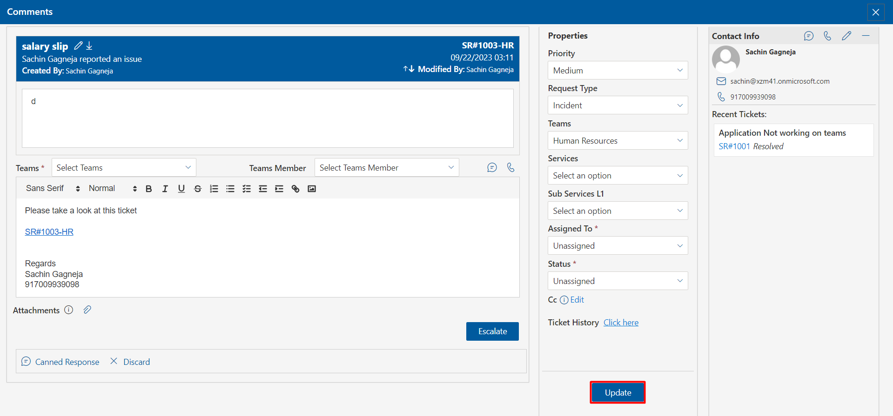
Escalate Tickets
Escalate any issue if the ticket is not resolved within a specific time interval.
To esalate the issue, follow the steps:
Automatic Ticket Creation
Once the create ticket is enabled the request sent by users from the Civic email ID would be directly considered as a ticket and would display in the unassigned tab of the home page. Now ifs create ticket is disabled, the raised request from the Civic email ID would be displayed under Ticket Mailbox, Now either the ticket could be created or deleted.
Enable ticket closed justification
The 'Enable ticket closed justification' setting allows users to require justification when closing a ticket. This can be toggled on or off as needed for additional accountability in ticket management.
If you enable Enable ticket closed justification you will need to provide a justification every time you close a ticket.
And if the user has enabled the 'Enable ticket closed justification' setting, then the second option, 'Make Ticket Closure Justification Mandatory,' will be shown. In this case, the user will not be able to close the ticket without providing justification—it will be mandatory.
Auto Close Tickets
If the auto close is enabled, resolved tickets would be closed automatically at a specified time frame (ticket status changes from resolved to closed). If the ticket is resolved or there is no action on the ticket (no comments or modification) within the specified time frame, this ticket would be closed automatically or would remain resolved. This feature could be achieved by power automate, for more information please contact HR365 to configure.
Auto Assign Tickets
Auto Assign Tickets: If this feature is enabled, the ticket gets assigned to the agents automatically.
Allow agents to set their availability: Once this tab is enabled (this is visible in the settings to the agents from which they could enable or disable). Tickets would not get assigned to the agent until they enable this feature.
There are two types of auto assign tickets method, you can select either one.
Round Robin: Assign tickets to the agent in a circular fashion.
Weighted Round Robin: Assign the tickets to the agents who have the least tickets. Further, select the next agent with the least ticket, moreover it would not assign simultaneously two tickets to the same person.
-
Go to the comment page, click the Sub Ticket option.
-
Select Yes in a dialog box, this displays the Sub Ticket page.
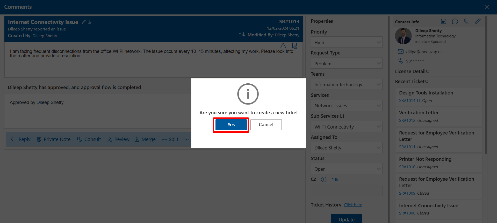 -
Enter Sub Ticket Title and Comments.
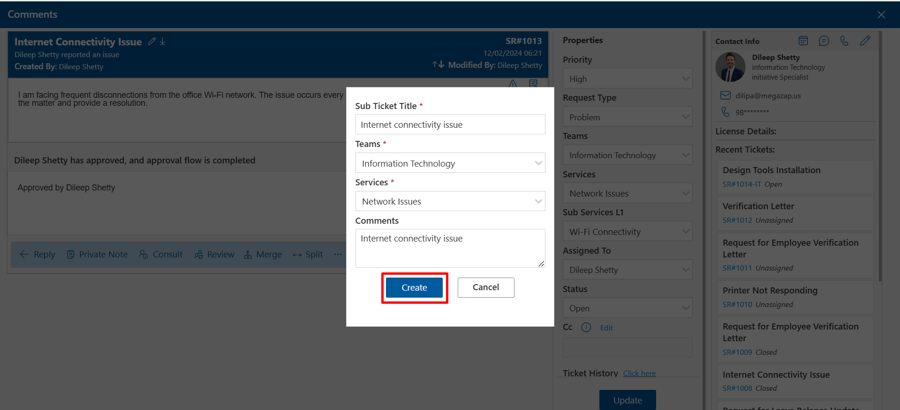 -
Sub ticket created and displayed on home page.
Sub Tickets
A sub ticket could be created from a ticket. Sub tickets are disabled (on default setting ), you can enable it by clicking Enable sub ticket toggle switch.You can Assign Sub Ticket by checking the Teams and/or Teams Members check box and clicking on the Save button as shown below.
The Sub Ticket option will be displayed on the comment page as shown below.
To create sub tickets, follow the below steps:
You can create multiple sub tickets from a main ticket.
-
Click on Ticket Aging Reports from Ticket Customizaton setting.

-
From here, you can enable it by clicking Enable Ticket Aging Reports toggle switch.
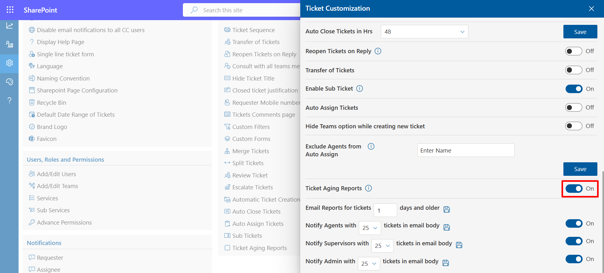 -
When the Ticket Aging Reports are enabled . You can choose how many days older emails should be sent for open tickets from the options below.
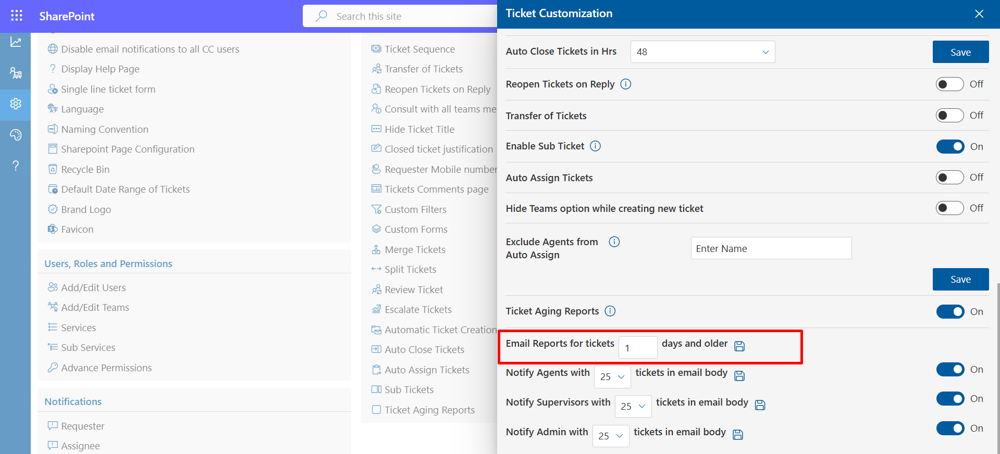 -
Choose the number of tickets you want to display in the email body, when mail is send to Agent, Supervisors, Admin. You can enable or disable these mail with the toggle switch.
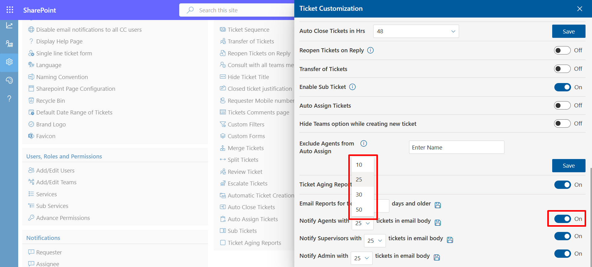
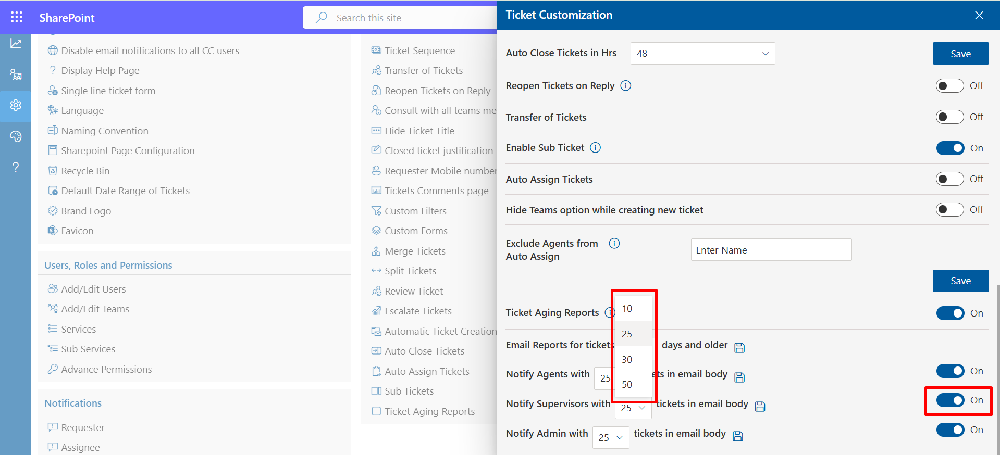
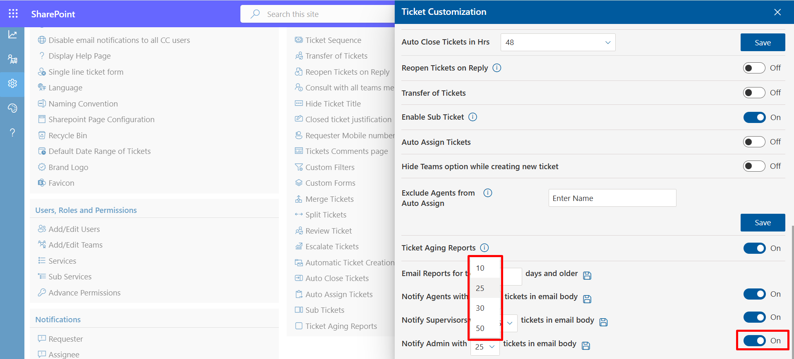